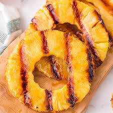

Grilled Pineapple Slices

Grilled cinnamon sweet pineapple rings! You can't eat just one ring!
Simple and delicious - I use half a bottle of Kraft light italian dressing and add minced garlic, cracked black pepper, italian seasoning, oregano, basil, a little white wine, 1/4 c. of olive oil, and a couple of sprigs of fresh rosemary. I put everything into a ziploc bag and let it go. This is great with a salad or over pasta.
Make our most popular pineapple today to find out what all the fuss is about!
Ingredients
- Fresh pineapple
- Canned coconut milk
- Cinnamon sugar
Steps
- Preheat a grill for medium heat. When the grill is hot, lightly oil the grate.
- Place the coconut milk and cinnamon sugar into separate dishes. Dip slices of pineapple into coconut milk, then coat in cinnamon sugar.
- Grill slices for 6 minutes on each side. Remove to plates, and serve.